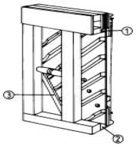
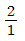
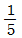
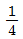
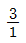
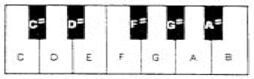

피아노조율기능사 (2005-07-17 기출문제)
1과목: 임의 구분
1. 업라이트 피아노 외장(CASE)의 일부이다. ①,②,③번의 명칭은?

- 돌림목(Sound board binding strip)
- 프레임받침(Iron frame bass)
- 하횡목(Bottom beam)
- 향봉(Sound board rid)
(정답률: 알수없음)

2. 싸일렌트(Silent) 페달이란?
- 소프트 페달(Soft Pedal)
- 소스테누토(Sostenuto Pedal)
- 댐퍼 페달(Damper Pedal)
- 머플러 페달(Muffler Pedal)
(정답률: 알수없음)
3. 현의 진동을 재생 결합시켜 음을 증폭시키는 역할을 하는 것은?
- 브리지
- 향판
- 돌림목
- 향봉
(정답률: 알수없음)
4. 다음 중에서 향봉의 주된 역할로 가장 옳은 것은?
- 향판의 크라운 유지
- 향판의 갈라짐 방지
- 브릿지 고정
- 불필요한 음의 확산 방지
(정답률: 알수없음)
5. 흑건반의 규격에 대한 설명 중 옳지 않은 것은?
- 흑건의 머리부분은 앞부분의 높이가 15.5~16.5 mm이다.
- 흑건의 폭은 윗면이 9.0 ~ 10.5 mm 이다.
- 흑건의 폭은 밑면이 11.0 ~ 12.5 mm 이다.
- 흑건의 길이는 원칙적으로 95 mm 로 한다.
(정답률: 알수없음)
6. 피아노 품질에 대한 내용 중 틀린 것은?
- 건과 액션은 정확히 일치되게 부착되어 연관 운동이 원활, 민감해야 한다.
- 음량은 전 음역에 걸쳐 균정해야 한다.
- 음질은 전 음역에 걸쳐 균정하고 각 음이 아름답고 퍼짐이 없어야 한다.
- 피아노 외장은 비틀림, 균열 등의 결함이 없어야 한다.
(정답률: 알수없음)
7. 보통 피아노 한 선의 평균 장력은 대략 어느 정도인가?
- 150 - 180kg
- 120 - 150kg
- 100 - 120kg
- 70 - 90kg
(정답률: 알수없음)
8. 스트라이킹 포인트(Striking Point)란 ?
- 타현선
- 타현력
- 타현방법
- 타현점
(정답률: 알수없음)
9. 원칙적인 피아노 액션에 대한 설명 중 틀린 것은?
- 업라이트형 액션은 브래킷에 의해서 피아노의 몸체에서 떼었다 붙였다 할 수 있는 구조이어야 한다.
- 업라이트형 해머 받드의 센터핀은 원칙적으로 받드 플레이트에 따라서 고정되어 있어야 한다.
- 업라이트형의 해머 레일 또는 언더 레일에는 탄력성이 있는 크로스를 부착하여 잡음을 방지한 것이어야 한다.
- 해머 생크와 댐퍼 헤드는 휨과 탄력성 및 지음 효과가 적어야 한다.
(정답률: 알수없음)
10. 핀판의 고유 역할에 대한 설명 중 가장 적당한 것은?
- 철골(Plate)을 보조한다.
- 향판과 더불어 공명 효과를 향상시켜 준다.
- 철골의 조임 나사못이 단단하게 박혀있게 한다.
- 조율 핀을 고정시켜 음율을 안정적으로 유지시킨다.
(정답률: 알수없음)
11. 평균율에 있어서 옥타브를 C1- G - C2와 같이 조율 했을 때 C1- G의 맥놀이는 G - C2의 맥놀이와 어떤 관계에 있어야 하는가?




(정답률: 알수없음)
12. 음의 속도에 관한 설명 중 옳은 것은?
- 음의 속도는 섭씨 15℃일 때 340m/sec 정도이다.
- 음의 속도는 섭씨 0℃일 때 340m/sec 정도이다.
- 음의 속도는 섭씨 10℃일 때 340m/sec 정도이다.
- 음의 속도는 섭씨 20℃일 때 340m/sec 정도이다.
(정답률: 알수없음)
13. 높이가 다른 음이 동시에 울리거나 진행하는 것 또는 높낮이의 동시적인 배합을 무엇이라 하는가?
- 멜로디
- 화성
- 리듬
- 가락
(정답률: 알수없음)
14. 평균율 4도, 5도는 순정율 4도, 5도에 비해 어느 정도의 오차가 있는가?
- 4도는 2센트 넓고, 5도는 2센트 좁다.
- 4도는 2센트 좁고, 5도는 2센트 넓다.
- 4도는 4센트 넓고, 5도는 5센트 좁다.
- 4도는 5센트 넓고, 5도는 4센트 좁다.
(정답률: 알수없음)
15. 조율자세와 튜닝 해머 각도에 대한 설명 중 틀린 것은?
- 튜닝 해머는 가능한한 수직상태에 꽂고 조율한다.
- 팔꿈치는 가능한한 고정시킨 상태에서 조작한다.
- 튜닝 해머는 항상 힘껏 돌려야 한다.
- 작은 피아노(높이 1m내외)는 앉아서 조율하는 것이 편하다.
(정답률: 91%)
16. 평균율에서 장3도를 몇 번 계속하면 1옥타브가 되겠는가?
- 3번
- 6번
- 9번
- 12번
(정답률: 알수없음)
17. 잔향시간에 대한 올바른 설명은?
- 방의 용적에 비례하고 전흡음량에 반비례한다.
- 방의 용적에 반비례하고 전흡음량에 비례한다.
- 방의 용적과 전흡음량에 비례한다.
- 방의 용적과 전흡음량에 반비례한다.
(정답률: 알수없음)
18. 단3도인 F33은 174.614 Hz이고, G#36은 207.652 Hz이다. 두음 사이의 맥놀이 수는?
- 8.424
- 9.424
- 10.424
- 11.424
(정답률: 알수없음)
19. 평균율에 있어서 기음으로부터 위로 완전4도 아래로 완전5도의 음정을 잡았을 때 비트(Beats)수는?
- 4도의 비트가 5도의 1/2이다
- 5도의 비트가 4도의 1/2이다.
- 비트수는 1:1로 동일하다.
- 4도가 9비트 많다.
(정답률: 알수없음)
20. A37가 220Hz일 때 4도 위의 D42(293.665Hz)와의 맥놀이수는 매초당 몇개인가?
- 0.875
- 0.995
- 1.120
- 1.140
(정답률: 알수없음)
2과목: 임의 구분
21. 다음은 조율 유지에 관한 설명이다. 틀린 것은?
- 기본음을 필히 맞추어 조율을 하여야 한다.
- 동음을 무시하고 조율을 행하여야 한다.
- 연주자의 부탁에 따라 조율을 하여야 한다.
- 테스트 블로우(TEST BLOW)를 충분히 하여야 한다.
(정답률: 알수없음)
22. 주파수에 관한 설명 중 옳은 것은?
- 주파수는 현의 장력의 제곱근에 비례한다.
- 주파수는 현의 밀도의 제곱근에 비례한다.
- 주파수는 현의 길이에 비례한다.
- 주파수는 현의 지름에 비례한다.
(정답률: 알수없음)
23. 음의 성분의 차이로 생기는 감각적인 특성은?
- 음률
- 음색
- 하모니
- 순음
(정답률: 알수없음)
24. 소리의 크기 및 주파수를 분별하며 전기적인 작용으로 청각 신경세포를 통해 뇌세포에 전달하는 역할을 하는 것으로 와우각막을 둘로 나누고 있는 부분은 무엇인가?
- 중이
- 기저막
- 외이
- 고막
(정답률: 알수없음)
25. 공명현상이 일어나는 경우는?
- 불협화성의 고음부 음의 진동체가 개방되었을 경우
- 기본음의 배음계열에 있는 개방된 진동체일 경우
- 불협화성의 조건을 가진 진동체가 개방되었을 경우
- 무슨 진동체이든 개방이 되어 있을 경우
(정답률: 알수없음)
26. 기음에 대하여 불협화 하는 배음이 아닌 것은?
- 5배음
- 7배음
- 9배음
- 11배음
(정답률: 알수없음)
27. 해머가 전진하여 현을 때리기 까지의 거리는?
- 단선점
- 타현점
- 타현거리
- 진동거리
(정답률: 알수없음)
28. 반사도 되지만 흡수되어 버리는 성질이 강한 주파수는?
- 낮은 주파수
- 높은 주파수
- 중간 주파수
- 초저 주파수
(정답률: 알수없음)
29. 순음에 대한 설명 중 옳은 것은?
- 음색의 차이를 감별할 수 있다.
- 강약과 고저의 성질을 가지지 않는다.
- 파형은 완전한 사인(sin)곡선을 그린다.
- 일반적으로 보통의 악기에서 순음이 일어난다.
(정답률: 알수없음)
30. 아래의 한 옥타브(Octave)의 피아노 건반에서 E음에 대하여 상행 장3도의 음은 무엇인가?

- F#
- G#
- A#
- B
(정답률: 알수없음)
31. 어떤 소리가 또 다른 소리를 들을 수 있는 능력을 감소시키는 현상은?
- 주관음
- 양이효과
- 주파수
- 매스킹효과
(정답률: 91%)
32. 음의 전달속도가 가장 늦은 것은?
- 물 13℃ (비중 1.4)
- 공기 14℃ (비중 0.000126)
- 콘크리트 (비중 약 2.6)
- 베크라이트 (비중 1.3)
(정답률: 50%)
33. 현의 1/8부분을 때릴 때 가장 강하게 나오는 배음은?
- 2배음
- 4배음
- 8배음
- 16배음
(정답률: 알수없음)
34. 평균율에서 A49가 10센트 높으면 몇 Hz가 되는가?(A49:440Hz)
- 440.616
- 442.616
- 444.616
- 445.616
(정답률: 알수없음)
35. 평균율에서 A1가 20센트 낮다고 하면 몇 Hz가 되는가?(단, A1 = 27.5 Hz)
- 26.191
- 27.191
- 28.191
- 29.191
(정답률: 알수없음)
36. 건반잡음을 없애기 위한 작업 중 필요없는 작업은?
- 건반목에 약간의 거스러미를 없애준다.
- 건반의 납이 헐거워져 있으면 망치로 때려서 납을 넓혀 준다.
- 건반 바란스핀 구멍이 넓을 때는 쐐기를 박고 다시 적당하게 구멍을 뚫는다.
- 캡스턴 블록과 위펜힐과의 마찰계수가 적을 때는 마찰계수가 많게 작업한다.
(정답률: 알수없음)
37. 오래 사용한 페달이 좌우로 흔들릴 때 가장 좋은 수리 방법은?
- 페달 구멍 좌우에 펠트를 고여 준다.
- 페달 센터핀을 굵은 것으로 바꿔 준다.
- 페달 브래킷의 플라스틱 또는 플랜지 크로스를 바꿔 준다.
- 페달 브래킷이나 플랜지 나사못을 조여 준다.
(정답률: 알수없음)
38. 댐퍼스프링이 부러졌을 때 교체하는 방법 중 가장 옳은 것은?
- 센터핀을 빼고 플랜지에 있는 무명실 대신 못으로 교체한다.
- 플랜지에 있는 구멍에 스프링이 흔들리도록 센터핀으로 교체한다.
- 센터핀을 빼고 스프링을 그 센터핀에 걸리도록 교체한다.
- 플랜지에 있는 구멍에 무명실을 여러겹으로 합쳐서 교체한다.
(정답률: 알수없음)
39. 타현거리가 심하게 좁아져 있을 때 타현거리를 정상으로 맞추면서 연관작업하는 것과 가장 관계없는 것은?
- 건반깊이를 조정한다.
- 해머스톱을 조정한다.
- 댐퍼스푼을 조정한다.
- 밸런스레일 밑의 종이 패킹을 빼낸다.
(정답률: 알수없음)
40. 업라이트 피아노의 받드펠트(Butt felt)에 관한 것이다. 틀린 것은?
- 받드펠트 접착시 받드스킨 쪽은 접착제를 바르지 않는다.
- 같은 속도로 타건할 때 받드펠트가 얇으면 타현 속도가 느리고 두꺼우면 빠르다.
- 펠트가 얇으면 렛오프(let off)시 마찰이 크다.
- 스킨쪽에 접착제가 묻으면 잭과의 사이에 잡음을 일으킨다.
(정답률: 알수없음)
3과목: 임의 구분
41. 댐퍼 펠트가 굳어서 현과 접촉할 때 잡음이 난다. 이때 수리 방법은?
- 펠트에 물을 발라준다.
- 펠트를 인두로 다려준다.
- 펠트에 실리콘을 발라준다.
- 픽커로 고루 찔러준다.
(정답률: 알수없음)
42. 다음은 현을 교환하는 방법이다. 틀린 것은?
- 튜닝핀을 돌릴 때 몇번을 돌렸는가 기억해 둔다.
- 와이어의 한쪽을 튜닝핀 구멍 밖으로 5mm정도 나오게 감는다.
- 와이어의 한쪽끝을 튜닝핀 구멍끝에 꼭 맞도록 한다.
- 와이어가 튜닝핀에 3바퀴 반정도 감기도록 하여야 한다.
(정답률: 알수없음)
43. 해머 받드의 각종 접착부분에 관한 작업방법 중 옳은 방법은?
- 쿠숀 펠트가 떨어졌을 때는 앞의 것보다 조금 두꺼운 것을 붙인다.
- 받드 스킨 접착시에는 본드를 전체적으로 칠한 후 접착한다.
- 캐쳐 스킨이 떨어졌을 때는 양쪽끝에만 접착제를 칠해 붙인다.
- 캐쳐 스킨을 교환할 때 거스러미가 눕는 방향을 위로 해서 붙인다.
(정답률: 알수없음)
44. 댐퍼 스푼의 조정은 해머가 몇 mm 진행했을 때 댐퍼 작동이 시작되어야 하는가?
- 5 - 9 mm
- 20 - 23 mm
- 30 - 34 mm
- 35 - 39 mm
(정답률: 알수없음)
45. 음향판에서 잡음이 생길 때 수리 중 틀린 것은?
- 향판과 브리지가 떨어졌는지를 살펴야 한다.
- 향판과 향봉이 떠 있는지를 살펴야 한다.
- 향봉에 페달봉이 붙어 있는지를 살펴야 한다.
- 향판이 갈라져 있는지를 살펴야 한다.
(정답률: 알수없음)
46. 음향판에 스프루스가 사용되는 이유로서 올바르지 못한 것은?
- 진동 전파가 빨라야 한다.
- 비중이 커야 한다.
- 탄력성이 풍부해야 한다.
- 유연성이 있어야 한다.
(정답률: 알수없음)
47. 백건에 손때나 지저분한 것이 많이 묻어 있다. 이것을 깨끗하게 제거하려고 할 때 가장 좋은 방법은?
- 신너나 아세톤을 헝겊에 묻혀 닦아낸다.
- 페퍼로 문질러서 제거한다.
- 칼이나 줄로 긁어낸다.
- 콤파운드나 치약을 사용해서 닦아낸다.
(정답률: 알수없음)
48. 바란스핀 홀이 빡빡할 때 가장 올바른 교정법은?
- 조정공구로 핀구멍을 아래로부터 위로 찔러 핀구멍을 넓힌다.
- 조정공구로 키버튼 구멍을 통하여 위로부터 아래로 찔러 구멍을 넓혀 준다.
- 건반을 아래 위로 흔들어 준다.
- 건반을 전후로 흔들어 준다.
(정답률: 알수없음)
49. 해머가 마모되어 성형하는 작업과 가장 관계 있는 것은?
- 토르크(torque)라 한다.
- 니들링(needling)이라 한다.
- 경화제를 바르는 작업이다.
- 화일링(filing)이라 한다.
(정답률: 알수없음)
50. 레규레이팅 버턴의 조정은 해머가 현과 몇 mm 접근했을 때 멈추게 조정하는 것이 가장 적당한가?
- 저음 0.1mm, 중음 0.5mm, 고음 0.6mm
- 저음 3mm, 중음 2.5mm, 고음 2mm
- 저음 5mm, 중음 4.5mm, 고음 4mm
- 저음 7mm, 중음 6mm, 고음 5mm
(정답률: 알수없음)
51. 레규레이팅 버턴을 돌릴 때 일반적으로 드라이버를 사용하는 방법은?
- 깊게 꽂아 돌려야 한다.
- 적당한 깊이로 꽂아 돌려야 한다.
- 각을 숙여놓고서 꽂아 돌려야 한다.
- 옆으로 꽂아 돌려야 한다.
(정답률: 알수없음)
52. 건반 부분에서 잡음이 나는 원인 중 가장 옳은 것은?
- 부싱 크로스가 마모 또는 경화
- 부싱이 빡빡해져서
- 납이 너무 무거워서
- 부싱 크로스가 두터워서
(정답률: 알수없음)
53. 피아노의 조정이라고 볼 수 없는 것은?
- 타현거리 조정
- 캡스턴 조정
- 건반깊이 조정
- 해머자체무게 조정
(정답률: 100%)
54. 다음 중 펠트, 크로스, 스킨 교환 수리 방법 중 틀린 것은?
- 댐퍼 펠트가 오래 다져져서 지음이 안될 경우 샌드페이퍼로 살짝 문지른 다음 피커로 경도를 낮춘다.
- 백첵 펠트가 조금 닳았을 때는 해머스톱 거리에 맞게 간격을 조정한다.
- 해머받드 쿠숀 크로스 교환시 접착제가 돌출되지 않도록 교환한다.
- 윕펜 힐 크로스 교환시 크로스 전체에 접착제를 바른다.
(정답률: 알수없음)
55. 업라이트 피아노의 소프트 페달(soft pedal)을 밟았을 때의 조정은?
- 해머가 타현거리의 1/3 진행하게 조정한다.
- 해머가 타현거리의 1/2 진행하게 조정한다.
- 해머가 타현거리의 2/3 진행하게 조정한다.
- 해머가 10mm 진행하게 조정한다.
(정답률: 100%)
56. 딥블럭(Dip block)의 주된 용도는?
- 건반의 넓이를 측정하는 자
- 건반의 백색도를 측정하는 계기
- 건반의 깊이를 측정하는 자
- 건반의 무게를 측정하는 저울
(정답률: 알수없음)
57. 해머가 사진행 할 경우 가장 올바른 작업 방법은? (단, 업라이트 피아노일 경우)
- 해머 생크를 떼었다 다시 붙여 조정한다.
- 해머가 사진행하는 플랜지의 반대방향에 종이를 붙여 조정한다.
- 해머가 사진행하는 방향의 플랜지에 종이를 붙여 조정한다.
- 플랜지 나사를 풀었다 조이면서 조정한다.
(정답률: 알수없음)
58. 브라이들 와이어가 백첵와이어에 닿아 잡음이 발생하고 있다. 이 잡음의 가장 적절한 제거법은?
- 브라이들 와이어를 깊히 박아준다.
- 백첵 와이어를 구부려준다.
- 브라이들 테프를 당겨준다.
- 브라이들 와이어를 구부려 좌우 백첵와이어와 닿지 않게 한다.
(정답률: 알수없음)
59. 페달 브래킷(목재)의 수리 방법 중 가장 올바른 방법은?
- 고정된 상태에서 나사못을 조여준다.
- 분해시키지 않고 접착제를 바른 후 나사못을 조여준다.
- 분해시킨 후 필요한 부분을 수리하고 나사못만 조여준다.
- 분해시킨 후 필요한 부분을 수리하고 접착제를 브래킷 밑면에 칠하고 나사못을 조여준다.
(정답률: 알수없음)
60. 일반적인 업라이트 피아노의 페달에 관한 명칭들이다. 가장 옳은 것은?
- 댐퍼 페달, 소프트 페달, 머플러 페달
- 댐퍼 페달, 리프팅 페달, 머플러 페달
- 댐퍼 페달, 소스테누토 페달, 머플러 페달
- 소스테누토 페달, 해머레일 페달, 머플러 페달
(정답률: 알수없음)